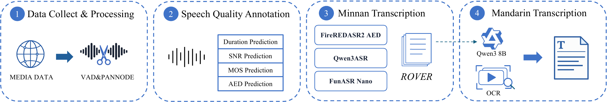
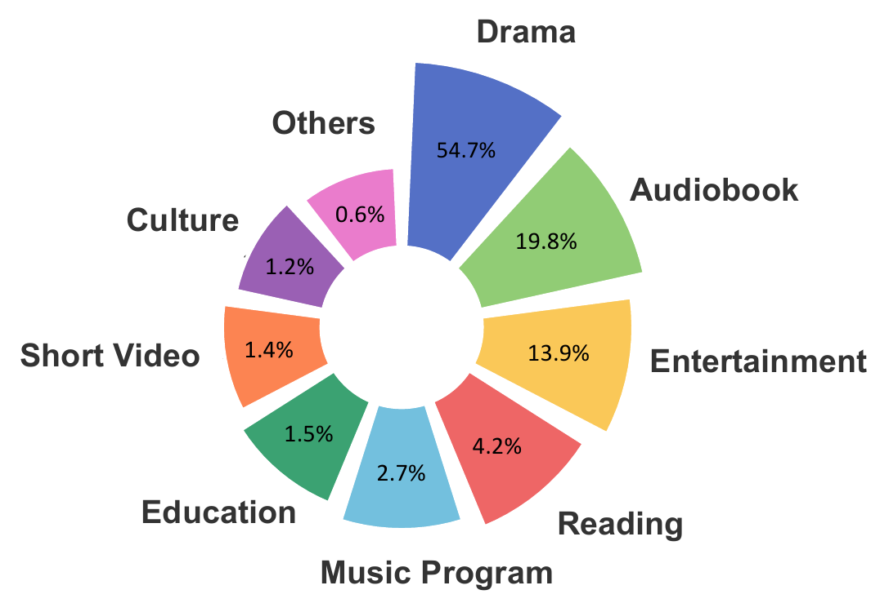
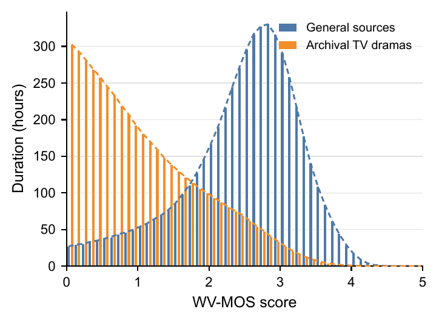
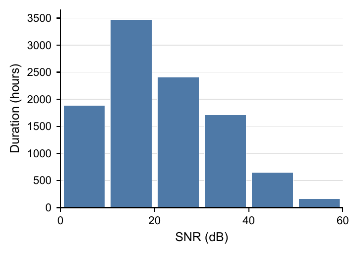
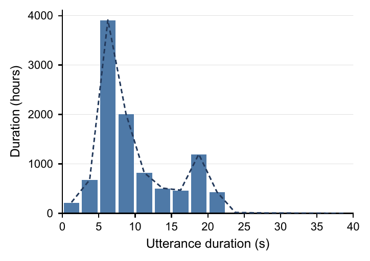

Abstract
Progress in dialectal speech technology is hindered by the scarcity of large-scale, real-world corpora. For Minnan speech, existing resources remain limited, and few provide paired Minnan and Mandarin transcripts at scale. To address these gaps, we introduce WenetSpeech-Min, an open-source corpus comprising around 10,000 hours of Minnan speech collected from diverse online media, with paired Minnan and Mandarin transcripts for every utterance. We further establish an automatic speech recognition (ASR) benchmark covering both Minnan and Mandarin transcripts and a text-to-speech synthesis (TTS) benchmark using Minnan transcripts, with manually verified evaluation sets for both tasks. To assess the effectiveness of the corpus, we train ASR and TTS models on WenetSpeech-Min and compare them with representative systems on the proposed benchmarks. The resulting models outperform the evaluated open-source models on most metrics and achieve competitive performance against commercial systems. We will release the corpus, benchmarks, and models to facilitate reproducible research on Minnan speech technology.
Data Construction Pipeline
The unified pipeline processes audio from heterogeneous online media and generates paired Minnan and Mandarin transcripts. Audio processing segments recordings into utterances and filters them by speech content and acoustic quality. For transcript generation, multiple Minnan ASR systems are combined to produce a dialect transcript, followed by subtitle extraction or translation to obtain its Mandarin counterpart.

WenetSpeech-Min
Dataset Overview
- Approximately 10,000 hours of Minnan speech collected from multiple online platforms.
- 5,121,249 utterances, each paired with a Minnan transcript and a Mandarin transcript.
- Audio spans diverse recording conditions, including clean sources and archival television material.




Data Samples
Listen to speech samples alongside their Minnan transcripts, Mandarin translations, and speaker information.
ASR Leaderboard
Minnan Transcription Results
Results on WS-Min-Eval-ASR. Lower D-CER is better. Light green rows indicate models trained on WenetSpeech-Min.
| Model | D-CER (%) ↓ |
|---|---|
| Hy-ASR-3.0-Preview† | 32.78 |
| CN-MultiDialect-ASR | 18.59 |
| Qwen3-ASR | 34.61 |
| Qwen3-ASR-WSM-Min | 17.59 |
| Qwen3-ASR-WSM-Min + internal data | 15.21 |
| FireRedASR2-AED | 43.39 |
| FireRedASR2-AED-WSM | 18.95 |
† Results obtained via a commercial API.
Mandarin Transcription Results
Results on WS-Min-Eval-ASR and the external GigaSpeechBench and MinSpeech test sets. Avg. is the unweighted mean across the three test sets. Lower M-CER is better; higher M-BLEU is better. Light green rows indicate models trained on WenetSpeech-Min.
| Model | WS-Min-Eval-ASR | GigaSpeechBench | MinSpeech | Avg. | ||||
|---|---|---|---|---|---|---|---|---|
| M-BLEU ↑ | M-CER (%) ↓ | M-BLEU ↑ | M-CER (%) ↓ | M-BLEU ↑ | M-CER (%) ↓ | M-BLEU ↑ | M-CER (%) ↓ | |
| Mandarin Transcription | ||||||||
| FunASR-Realtime† | 39.09 | 45.41 | 53.37 | 32.62 | 28.22 | 63.23 | 40.23 | 47.09 |
| SeedASR2.0† | 38.91 | 47.58 | 55.32 | 32.50 | 68.53 | 26.21 | 54.25 | 35.43 |
| Qwen3-ASR-MinSpeech | 20.34 | 60.57 | 12.39 | 71.26 | 67.94 | 23.93 | 33.56 | 51.92 |
| Qwen3-ASR-WSM-Mandarin | 42.93 | 42.56 | 51.20 | 34.01 | 59.82 | 29.42 | 51.32 | 35.33 |
| Qwen3-ASR-WSM-Mandarin + internal data | 49.39 | 36.81 | 47.65 | 36.66 | 65.69 | 25.68 | 54.24 | 33.05 |
| Paired-Transcript Recognition | ||||||||
| FireRedASR2-AED | 18.05 | 64.40 | 36.91 | 49.35 | 13.60 | 85.02 | 22.85 | 66.26 |
| FireRedASR2-AED-WSM | 46.06 | 39.53 | 57.40 | 28.61 | 57.73 | 31.85 | 53.73 | 33.33 |
† Results obtained via commercial APIs.
TTS Leaderboard
Results on WS-Min-Eval-TTS. Lower CER is better; higher is better for the other metrics. Light green rows indicate models trained on WenetSpeech-Min.
| Model | WS-Min-Eval-TTS-Easy | WS-Min-Eval-TTS-Hard | ||||||||
|---|---|---|---|---|---|---|---|---|---|---|
| CER (%) ↓ | SIM ↑ | I-MOS ↑ | S-MOS ↑ | A-MOS ↑ | CER (%) ↓ | SIM ↑ | I-MOS ↑ | S-MOS ↑ | A-MOS ↑ | |
| QwenAudio-3.0-TTS† | 19.90 | 0.672 | 3.88 | 3.85 | 3.62 | 35.09 | 0.685 | 3.75 | 3.73 | 3.70 |
| Qwen3TTS-Flash†,‡ | 24.44 | -- | 3.93 | -- | 3.93 | 38.02 | -- | 3.75 | -- | 3.73 |
| FireRedTTS3 | 33.76 | 0.747 | 3.30 | 3.32 | 3.13 | 55.33 | 0.731 | 3.15 | 3.39 | 3.04 |
| VoxCPM2 | 28.16 | 0.707 | 3.45 | 3.54 | 3.38 | 40.50 | 0.681 | 3.17 | 3.48 | 3.36 |
| MERaLiON-TTS | 21.25 | 0.622 | 3.83 | 3.73 | 3.65 | 37.28 | 0.636 | 3.58 | 3.73 | 3.63 |
| CosyVoice3 | 63.69 | 0.654 | 2.13 | 2.13 | 1.49 | 60.35 | 0.610 | 2.00 | 2.40 | 1.43 |
| CosyVoice3-WSM | 20.26 | 0.678 | 3.85 | 3.75 | 3.65 | 35.98 | 0.669 | 3.65 | 3.85 | 3.70 |
† Results obtained via commercial APIs. ‡ Uses a single fixed speaker; SIM and S-MOS are therefore not evaluated.
TTS Demo
Each row shows the target text, its reference audio, and synthesized speech from each system. Scroll horizontally to compare the models.